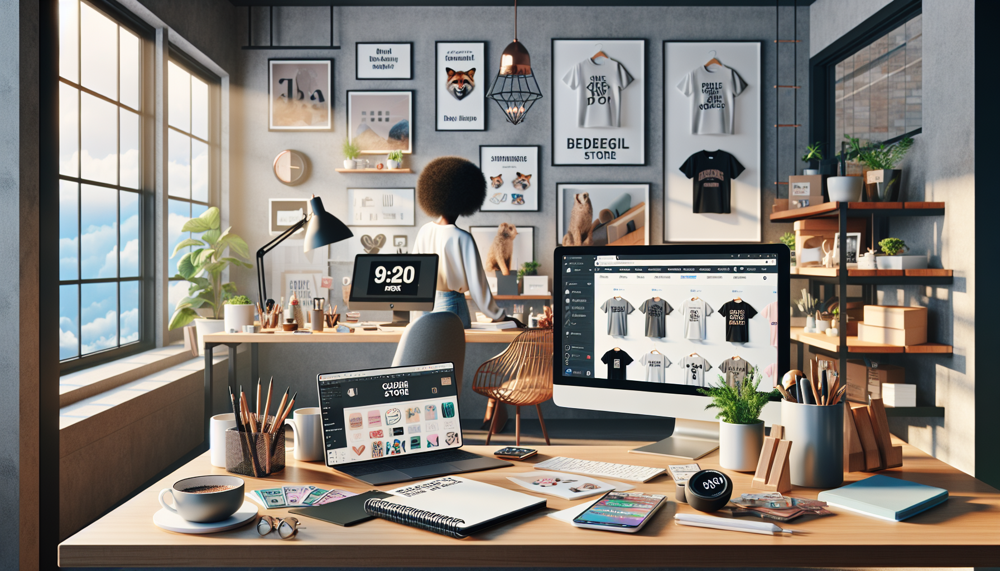

If you have been looking for a business model that is low-risk, location-independent, and scalable without a warehouse full of inventory, print-on-demand still deserves your attention in 2025. While trends come and go, the core appeal of print-on-demand has not changed: you create a design once, list it on a marketplace or website, and a third-party supplier handles printing, packing, and shipping when a customer places an order.
For aspiring entrepreneurs, side hustlers, and digital nomads, that is a powerful setup. You do not need to buy products in bulk. You do not need to manage fulfillment. You do not need a huge startup budget. What you do need is a smart niche, strong product positioning, and a system that turns simple designs into repeatable sales.
Many people assume print-on-demand is too crowded in 2025. The truth is more practical: generic stores struggle, but targeted sellers with clear branding and keyword-focused listings are still winning. The opportunity is not gone. It has simply matured. That is good news for serious beginners, because mature markets reward strategy over hype.
Here is why print-on-demand remains a goldmine in 2025 and how you can use it to build a profitable, automated online business.
One of the biggest reasons print-on-demand continues to thrive is simple: the barrier to entry is still remarkably low compared to most businesses. Starting an ecommerce brand the traditional way usually means buying inventory upfront, paying for storage, managing packaging, and taking on the risk of unsold products. Print-on-demand removes almost all of that friction.
In 2025, you can launch with little more than a laptop, internet connection, design ideas, and access to platforms like Etsy, Shopify, or Printify. Instead of investing thousands before validating demand, you can test products with minimal financial exposure. That makes print-on-demand especially attractive for side hustlers who want to build income after work, and digital nomads who need a business they can run from anywhere.
Low cost does not mean low potential. It means you can experiment faster, learn quicker, and scale what works without burning cash on products no one wants.
Mass-market products are everywhere, which is exactly why niche and personalized products continue to perform so well. Buyers do not just want another mug or t-shirt. They want products that reflect identity, humor, profession, hobbies, values, or life milestones. That demand is what keeps print-on-demand relevant.
In 2025, niche communities are stronger than ever. Whether it is dog moms, nurses, gamers, teachers, campers, pickleball players, gardeners, or remote workers, people love products that feel made for them. Print-on-demand lets you serve these audiences quickly and affordably.
This is where aspiring entrepreneurs often miss the point. Success rarely comes from selling to everyone. It comes from speaking directly to a specific buyer. A generic quote shirt may get ignored, but a product aimed at left-handed guitar teachers, book-loving moms, or first-time van lifers can stand out fast.
The goldmine is not in broad products. It is in specific demand. The more targeted your niche, the easier it becomes to create listings that connect emotionally and convert.
Traffic is one of the hardest parts of online business. That is why marketplaces like Etsy remain a major advantage for print-on-demand sellers in 2025. Instead of building a store from scratch and hoping people find it, you can tap into an existing platform where shoppers are already searching for gifts, custom items, and niche products.
Etsy is especially powerful because buyer intent is high. People go there ready to purchase. If your listing is optimized with the right keywords, strong mockups, and a compelling product angle, you can get visibility without running paid ads from day one.
This matters for beginners because it shortens the path to your first sale. You do not need to master every marketing channel before launching. You can start by leveraging Etsy SEO, seasonal trends, and niche demand to generate momentum.
Other channels also support growth in 2025, including:
But Etsy remains one of the fastest paths for turning print-on-demand into an automated income stream, especially if you focus on searchable products with clear buyer intent.
Print-on-demand has become even more attractive because the tools are better. In 2025, sellers can automate huge parts of the business, from product syncing and order routing to mockup generation and listing workflows. That means more leverage and less manual work.
Once your store is set up, the business can run with surprisingly little day-to-day involvement. A customer places an order, your print provider receives it automatically, the product gets printed and shipped, and the customer receives tracking updates. Your role shifts from operator to optimizer.
This is why print-on-demand works so well for digital nomads and side hustlers. You can build the system once, then spend your time improving designs, researching trends, and expanding profitable niches instead of packing boxes at midnight.
Automation tools now make it easier to:
A business that requires less manual effort has more room to scale. That is one reason print-on-demand remains such a smart model in 2025.
Another reason print-on-demand is still a goldmine is that the execution barrier has dropped dramatically. You no longer need to be a professional designer to create attractive products. With AI-assisted tools, drag-and-drop design platforms, and easier access to freelancers, launching a polished store is more realistic than ever.
This does not mean you can upload random AI-generated designs and expect profits. The winners still focus on market research, relevance, and presentation. But the ability to move from idea to live product has become much faster, which gives entrepreneurs a huge advantage.
In practical terms, you can now:
Speed matters in ecommerce. The faster you can test and refine, the faster you can find winning products. In 2025, the sellers who treat print-on-demand like a real business and use modern tools wisely are in a better position than ever.
Most entrepreneurs lose money because they commit too early to unproven ideas. Print-on-demand solves that problem by making product validation simple. You can launch a design, measure clicks, favorites, and sales, then improve or replace it without being stuck with dead inventory.
This makes print-on-demand ideal for entrepreneurs who think strategically. Instead of guessing what people want, you can test real demand in the market. If one niche underperforms, pivot. If one product style takes off, double down. The business rewards adaptability.
That flexibility is valuable in 2025 because consumer trends move quickly. Seasonal demand, internet culture, gifting behavior, and niche communities all create opportunities for sellers who can respond fast.
Think of print-on-demand as a low-cost market research machine that also generates revenue. Each listing teaches you something. Each sale gives you data. Over time, that data becomes a competitive advantage.
The people who say print-on-demand is saturated are usually thinking too small. They imagine uploading a few shirt designs and waiting for passive income. That is not a business. A real print-on-demand business is a system built around niche research, keyword optimization, strong offers, and consistent testing.
That is exactly why it still works in 2025. Most people are not willing to treat it seriously. They quit too early, copy weak designs, or ignore SEO. Meanwhile, disciplined sellers build stores filled with targeted products that solve gifting needs, express identity, and rank for buyer searches.
If you approach print-on-demand with a results-focused mindset, the upside is still strong. You can start lean, validate quickly, automate fulfillment, and grow into a real income stream without the risks that come with traditional ecommerce.
For aspiring entrepreneurs, this is one of the clearest opportunities available today. It combines low startup costs, built-in marketplace traffic, automation, and scalability. Few business models check all those boxes at once.
Print-on-demand is not a shortcut, but it is still a goldmine for people who understand how to position products, target niches, and use automation intelligently. In 2025, the model remains one of the best ways to start an online business with minimal risk and maximum flexibility.
If you want a business you can run from home, from a coffee shop, or from anywhere in the world, print-on-demand is still one of the smartest ways to begin. The opportunity is real. The tools are better. The market is active. And the barrier to entry is still low enough for beginners to start now.
The key is not to wait for the perfect moment. It is to launch, test, learn, and improve. That is how small stores become consistent income streams.
Start your own automated Etsy business today — no inventory, no upfront cost.